The two datasets I am using for this project contain information about nontropical bird species. One dataset ("nontropical_bird_data.csv") came from a study performed at Michigan State University that compares characteristics from nontropical bird species. Such variables include scientific name, the number collected, latitude, diet type (from five categories), litter/clutch size, maximum longevity in years, and the seasonal variation in temperature. The second database came from a bird database website (birdlife.org) and contains information about bird body size. This includes average adult body mass, average female body mass, and average male body mass for a variety of tropical and nontropical bird species.
As an environmental science major studying ecology, I am very interested in discovering relationships between and among animal species. There are so many questions that can be asked using these variables. For example, we can look at the relationship between bird size and diet type. I expect the larger birds to be the ones that consume vertebrates, fish, and scavenge, since these food items are easier to eat for larger animals (compared to seeds and fruit). I also expect the larger birds to have a longer lifespan and smaller litter size. Larger animals tend to put less time into reproduction (which is very energetically costly) and instead put energy into raising only a few offspring, thus maximizing the chance that these individuals will survive longer.
library(tidyverse)
spp <- read.csv("nontropical_bird_data.csv")
mass <- read.csv("bird_body_mass.csv")
glimpse(spp)## Rows: 68
## Columns: 8
## $ nontropical_binomial <fct> Acanthiza pusilla, Aethopyga goul…
## $ nontropical_n <int> 18, 23, 75, 276, 22, 172, 49, 26,…
## $ nontropical_lat <dbl> 32.80000, 22.16750, 27.24251, 31.…
## $ nontropical_cv_logmass <dbl> 0.12791079, 0.05951148, 0.0312976…
## $ nontropical_Diet.5Cat <fct> Invertebrate, Omnivore, PlantSeed…
## $ nontropical_litter_or_clutch_size_n <dbl> 2.700, NA, 4.000, 3.725, 2.000, 1…
## $ nontropical_maximum_longevity_y <dbl> NA, NA, NA, 5.083333, 25.800000, …
## $ nontropical_seasonal_var_temp <dbl> 364.8777, 444.7556, 558.2608, 522…glimpse(mass)## Rows: 136
## Columns: 4
## $ species_name <fct> Acanthiza pusilla, Aethopyga gouldiae, Aimophila c…
## $ adult_body_mass_g <dbl> 7.6000, 6.1250, 15.3000, 18.7500, 302.0000, 398.50…
## $ female_body_mass_g <dbl> 7.500, 5.000, 15.000, 17.925, NA, 395.000, 945.750…
## $ male_body_mass_g <dbl> 8.60, 7.25, 15.00, 19.30, NA, 402.00, 781.00, NA, …In this step, we are joining these two datasets by the common variable of the scientific name ("nontropical_binomial" for the species dataset, "species_name" for the body mass dataset). We are doing a right join because we want to keep all of the data in the nontropical species dataset (ie, all of these species). However we are doing a right join because I prefer to keep the name "species_name" for each species, as this is easier to work with than "nontropical_binomial". By joining these two datasets like this, we lose the bird species that were in the body mass dataset that don't have a match in the nontropical species dataset (including all the tropical species). The species dataset maintained all 68 observations. The bird body mass dataset lost 68 observations (out of 136) that were not in the species dataset.
birddata <- right_join(mass, spp, by = c(species_name = "nontropical_binomial"))Since my datasets were already tidy, I am simplying making them untidy by spliting up the Diet type into two columns. Pivot wider fixes this mistake by making the diet category variable be its own column again.
birddata %>% pivot_longer(contains("Diet")) #splits diet variable into two different columns## # A tibble: 68 x 12
## species_name adult_body_mass… female_body_mas… male_body_mass_g nontropical_n
## <fct> <dbl> <dbl> <dbl> <int>
## 1 Acanthiza p… 7.6 7.5 8.6 18
## 2 Aethopyga g… 6.12 5 7.25 23
## 3 Aimophila c… 15.3 15 15 75
## 4 Aimophila r… 18.8 17.9 19.3 276
## 5 Amazona fin… 302 NA NA 22
## 6 Anas discors 398. 395 402 172
## 7 Buteo buteo 878. 946. 781 49
## 8 Calocitta c… 224. NA NA 26
## 9 Catharus gu… 30.6 NA NA 1422
## 10 Charadrius … 42.3 46.1 44 122
## # … with 58 more rows, and 7 more variables: nontropical_lat <dbl>,
## # nontropical_cv_logmass <dbl>, nontropical_litter_or_clutch_size_n <dbl>,
## # nontropical_maximum_longevity_y <dbl>, nontropical_seasonal_var_temp <dbl>,
## # name <chr>, value <fct>birddata %>% pivot_longer(contains("Diet")) %>% pivot_wider(names_from = "name",
values_from = "value") #fixes the mistake by putting the diet types all in one column.## # A tibble: 68 x 11
## species_name adult_body_mass… female_body_mas… male_body_mass_g nontropical_n
## <fct> <dbl> <dbl> <dbl> <int>
## 1 Acanthiza p… 7.6 7.5 8.6 18
## 2 Aethopyga g… 6.12 5 7.25 23
## 3 Aimophila c… 15.3 15 15 75
## 4 Aimophila r… 18.8 17.9 19.3 276
## 5 Amazona fin… 302 NA NA 22
## 6 Anas discors 398. 395 402 172
## 7 Buteo buteo 878. 946. 781 49
## 8 Calocitta c… 224. NA NA 26
## 9 Catharus gu… 30.6 NA NA 1422
## 10 Charadrius … 42.3 46.1 44 122
## # … with 58 more rows, and 6 more variables: nontropical_lat <dbl>,
## # nontropical_cv_logmass <dbl>, nontropical_litter_or_clutch_size_n <dbl>,
## # nontropical_maximum_longevity_y <dbl>, nontropical_seasonal_var_temp <dbl>,
## # nontropical_Diet.5Cat <fct>birddata <- birddata %>% mutate(mass_difference = male_body_mass_g -
female_body_mass_g) %>% arrange(-mass_difference) #creating a new variable that is the difference in male and female body mass for each species
birddata %>% filter(nontropical_Diet.5Cat == "Omnivore") %>%
select(c("species_name", "adult_body_mass_g")) %>% arrange(-adult_body_mass_g)## species_name adult_body_mass_g
## 1 Rallus elegans 360.50000
## 2 Amazona finschi 302.00000
## 3 Calocitta colliei 223.50000
## 4 Cyanocorax beecheii 194.00000
## 5 Turdus merula 102.00000
## 6 Turdus migratorius 78.78333
## 7 Toxostoma curvirostre 78.70000
## 8 Dicrurus macrocercus 48.50000
## 9 Mimus polyglottos 48.50000
## 10 Myadestes townsendi 33.47500
## 11 Aimophila ruficeps 18.75000
## 12 Elaenia albiceps 15.55000
## 13 Coryphospingus cucullatus 14.10000
## 14 Aethopyga gouldiae 6.12500When examining my data, I made a new variable that calculates the difference in male and female body mass for each species. We can see from this that the species with the largest difference in mass between males and females are also the species with the largest adult body mass. I also filtered by birds that are the omnivore diet type and can see that Rallus elegans is the omnivore with the largest body mass and that the range of body masses across omnivores is about 354.4 grams.
birds2 <- birddata %>% rename_all(function(x) str_replace_all(x,
"_", "."))
birdsizes <- birddata %>% mutate(size_categories = ifelse(adult_body_mass_g >
1000, "Large", "Small")) #creating a categorical variable that marks if a bird is large (>1000 grams), or small (<1000 grams)
birddata %>% group_by(nontropical_Diet.5Cat) %>% summarise(count = n())## # A tibble: 5 x 2
## nontropical_Diet.5Cat count
## <fct> <int>
## 1 FruiNect 4
## 2 Invertebrate 31
## 3 Omnivore 14
## 4 PlantSeed 10
## 5 VertFishScav 9birddata %>% group_by(nontropical_Diet.5Cat) %>% summarize_if(is.numeric,
list(Q2 = quantile), probs = 0.5, na.rm = T) #finding the median for each numeric variable by diet type## # A tibble: 5 x 11
## nontropical_Die… adult_body_mass… female_body_mas… male_body_mass_…
## <fct> <dbl> <dbl> <dbl>
## 1 FruiNect 21.0 10.5 3.5
## 2 Invertebrate 19.6 26.9 34.2
## 3 Omnivore 63.6 46.4 51
## 4 PlantSeed 36.0 34.6 44.6
## 5 VertFishScav 376 344. 319.
## # … with 7 more variables: nontropical_n_Q2 <dbl>, nontropical_lat_Q2 <dbl>,
## # nontropical_cv_logmass_Q2 <dbl>,
## # nontropical_litter_or_clutch_size_n_Q2 <dbl>,
## # nontropical_maximum_longevity_y_Q2 <dbl>,
## # nontropical_seasonal_var_temp_Q2 <dbl>, mass_difference_Q2 <dbl>birdsizes %>% group_by(nontropical_Diet.5Cat, size_categories) %>%
summarize_if(is.numeric, list(mean = mean, sd = sd, var = var,
min = min, max = max, distinct = n_distinct))## # A tibble: 7 x 62
## # Groups: nontropical_Diet.5Cat [5]
## nontropical_Die… size_categories adult_body_mass… female_body_mas…
## <fct> <chr> <dbl> <dbl>
## 1 FruiNect Small 21.7 NA
## 2 Invertebrate Large 3050 2990
## 3 Invertebrate Small 53.9 NA
## 4 Omnivore Small 109. NA
## 5 PlantSeed Small 79.5 NA
## 6 VertFishScav Large 7465. 6535
## 7 VertFishScav Small 408. NA
## # … with 58 more variables: male_body_mass_g_mean <dbl>,
## # nontropical_n_mean <dbl>, nontropical_lat_mean <dbl>,
## # nontropical_cv_logmass_mean <dbl>,
## # nontropical_litter_or_clutch_size_n_mean <dbl>,
## # nontropical_maximum_longevity_y_mean <dbl>,
## # nontropical_seasonal_var_temp_mean <dbl>, mass_difference_mean <dbl>,
## # adult_body_mass_g_sd <dbl>, female_body_mass_g_sd <dbl>,
## # male_body_mass_g_sd <dbl>, nontropical_n_sd <dbl>,
## # nontropical_lat_sd <dbl>, nontropical_cv_logmass_sd <dbl>,
## # nontropical_litter_or_clutch_size_n_sd <dbl>,
## # nontropical_maximum_longevity_y_sd <dbl>,
## # nontropical_seasonal_var_temp_sd <dbl>, mass_difference_sd <dbl>,
## # adult_body_mass_g_var <dbl>, female_body_mass_g_var <dbl>,
## # male_body_mass_g_var <dbl>, nontropical_n_var <dbl>,
## # nontropical_lat_var <dbl>, nontropical_cv_logmass_var <dbl>,
## # nontropical_litter_or_clutch_size_n_var <dbl>,
## # nontropical_maximum_longevity_y_var <dbl>,
## # nontropical_seasonal_var_temp_var <dbl>, mass_difference_var <dbl>,
## # adult_body_mass_g_min <dbl>, female_body_mass_g_min <dbl>,
## # male_body_mass_g_min <dbl>, nontropical_n_min <int>,
## # nontropical_lat_min <dbl>, nontropical_cv_logmass_min <dbl>,
## # nontropical_litter_or_clutch_size_n_min <dbl>,
## # nontropical_maximum_longevity_y_min <dbl>,
## # nontropical_seasonal_var_temp_min <dbl>, mass_difference_min <dbl>,
## # adult_body_mass_g_max <dbl>, female_body_mass_g_max <dbl>,
## # male_body_mass_g_max <dbl>, nontropical_n_max <int>,
## # nontropical_lat_max <dbl>, nontropical_cv_logmass_max <dbl>,
## # nontropical_litter_or_clutch_size_n_max <dbl>,
## # nontropical_maximum_longevity_y_max <dbl>,
## # nontropical_seasonal_var_temp_max <dbl>, mass_difference_max <dbl>,
## # adult_body_mass_g_distinct <int>, female_body_mass_g_distinct <int>,
## # male_body_mass_g_distinct <int>, nontropical_n_distinct <int>,
## # nontropical_lat_distinct <int>, nontropical_cv_logmass_distinct <int>,
## # nontropical_litter_or_clutch_size_n_distinct <int>,
## # nontropical_maximum_longevity_y_distinct <int>,
## # nontropical_seasonal_var_temp_distinct <int>,
## # mass_difference_distinct <int># grouping by both diet type and size and calculating several
# summary stats
birds2 %>% summarize_if(is.numeric, list(mean = mean, min = min,
max = max)) %>% pivot_longer(c(1:30)) %>% separate(name,
into = c("var", "stat"), sep = ("_")) %>% pivot_wider(names_from = "stat",
values_from = "value") %>% na.omit## # A tibble: 4 x 4
## var mean min max
## <chr> <dbl> <dbl> <dbl>
## 1 adult.body.mass.g 366. 3.45 8800
## 2 nontropical.n 163. 9 1831
## 3 nontropical.lat 29.3 0.5 57
## 4 nontropical.cv.logmass 0.0545 0.0179 0.179# creating easier to read table that lists the mean, min, and
# max for each numeric variableI performed several rounds of summary stats to explore my data. First, I used count to figure out the number of birds in each diet type, with invertebrates being the most abundant (31) and fruit/nectar being the least abundant (4). I also used the quantile function to determine the second quantile (aka the median) for all of the numeric variables. This showed that the median body mass for vert/fish/scavengers is by far the highest (376 grams), beating out the second highest (omnivores) by a significant amount. I also used group_by to determine the mean, sd, var, min, and max for all of the 5 diet categories. Additionally, I created a new categorical variable that assigns large or small to species based on body type. I calculated the same summary stats using this grouping as well. Some interesting results from this analysis include the fact that there are no large birds in the diet categories Fruit/nectar, omnivore, or plant/seed. I also noticed from this analysis that the large vert/fish/scavengers were found at a higher latitude (on average) than the small birds in this diet category. Finally, I used pivot to make a table of the mean, min, and max of all numeric variables for every species. These results highlighted the large variety in many of my numeric variables. For instance, the largest bird was 8800 grams, whereas the smallest was only 3.45 grams. Likewise, the largest number of birds found was 1831 birds, whereas the smallest was 9 birds. There was also a large range of latitudes studied, with the average being about 30 degrees (close to where Austin is).
cormap <- birddata %>% select_if(is.numeric) %>% cor(use = "pair")
cormap %>% as.data.frame %>% rownames_to_column("var1") %>% pivot_longer(-1,
"var2", values_to = "correlation") %>% ggplot(aes(var1, var2,
fill = correlation)) + geom_tile() + scale_fill_gradient2(low = "red",
mid = "white", high = "blue") + geom_text(aes(label = round(correlation,
2)), color = "black", size = 2) + theme(axis.text.x = element_text(angle = 90,
hjust = 1)) + coord_fixed() + ggtitle("Correlation Heatmap for Bird Species Data")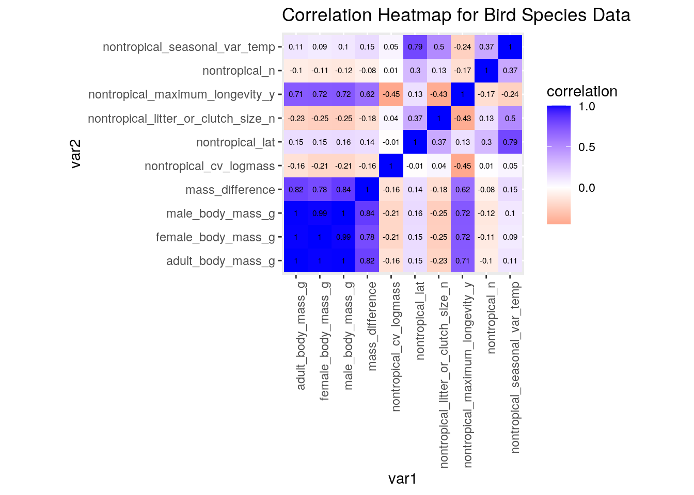 Using this correlation heat map, we can see the correlation between each numeric variable. Besides the obvious high correlation between the body size variables, there was also high correlation between latitude and seasonal variabiality in temperature. There was also relatively high correlation between maximum longevity and the body size variables (as I had predicted).
birdsizes <- birddata %>% mutate(size_categories = ifelse(adult_body_mass_g >
1000, "Large", "Small"))
ggplot(birddata, aes(adult_body_mass_g, nontropical_maximum_longevity_y)) +
geom_point(size = 3, aes(color = nontropical_Diet.5Cat)) +
scale_y_continuous(name = "Maximum Longevity (years)", breaks = seq(0,
60, 10)) + scale_x_continuous(name = "Body Mass (grams)") +
ggtitle("Body Mass (grams) by Maximum Longevity (years)") +
theme_bw()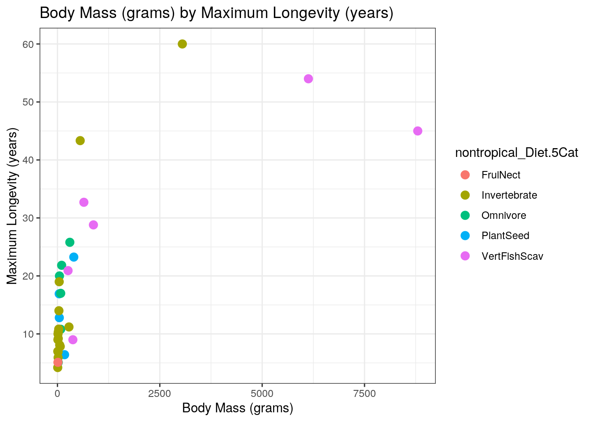 In this plot, we can see that there is some variation in maximum longevity at small body sizes. However, all birds that are greater than 2500 grams have a much long maximum longevity (45-60 years). Furthermore, these species tend to be the ones that consume Vertebrates, Fish, or are scavengers. There is also one invertebrate consumer that has a relative high body mass, however, there is a wide variety of body sizes for the invertebrates. Although there is one invertebrate with >2500 gram body size, there are also many that are only a few grams large.
ggplot(birdsizes, aes(nontropical_Diet.5Cat, adult_body_mass_g,
fill = size_categories)) + geom_bar(stat = "summary", fun = mean) +
scale_y_continuous(name = "Body Mass (grams)") + scale_x_discrete(name = "Diet Type") +
geom_errorbar(stat = "summary", fun.data = mean_se, width = 0.5) +
scale_fill_ordinal() + ggtitle("Body Mass of 5 different Bird Diet categories") +
theme_minimal()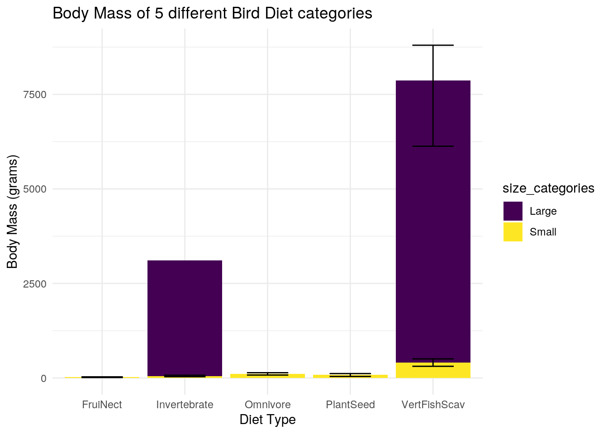
In this plot, I have illustrated the body sizes of each diet type. I also have shown the amount of total body mass composed of the large birds (adult body mass >1000) and the small birds (adult body size < 1000). This plot shows that the largest birds consume invertebrates or vertibrate/fish/scavengers. Furthermore, for these two diet groups, the large birds composed an overwhelming majority of the total body mass. It is interesting to view this plot keeping in mind the results of our summary stats. In our summary stats, we figured out that omnivores had the second highest median body size (behind vert/fish/scavengers). However, in this plot it appears that invertebrates are the second highest. We can now see that one or two large invertebrate eaters are significantly influencing the the total body mass of this collective group. I also added error bars to my bar chart. For the smaller size categories there is much less variability as compared to the larger body sizes. This makes sense between there is a greater absolute difference in the body sizes of the larger birds.
ggplot(birddata, aes(nontropical_seasonal_var_temp, nontropical_lat,
color = nontropical_Diet.5Cat)) + geom_point() + theme_dark() +
scale_y_continuous(name = "Latitude") + scale_x_continuous(name = "Seasonal Variability in Temperature") +
ggtitle("Seasonal Variability in Bird's Temperature at different Latitudes") +
scale_fill_gradient2()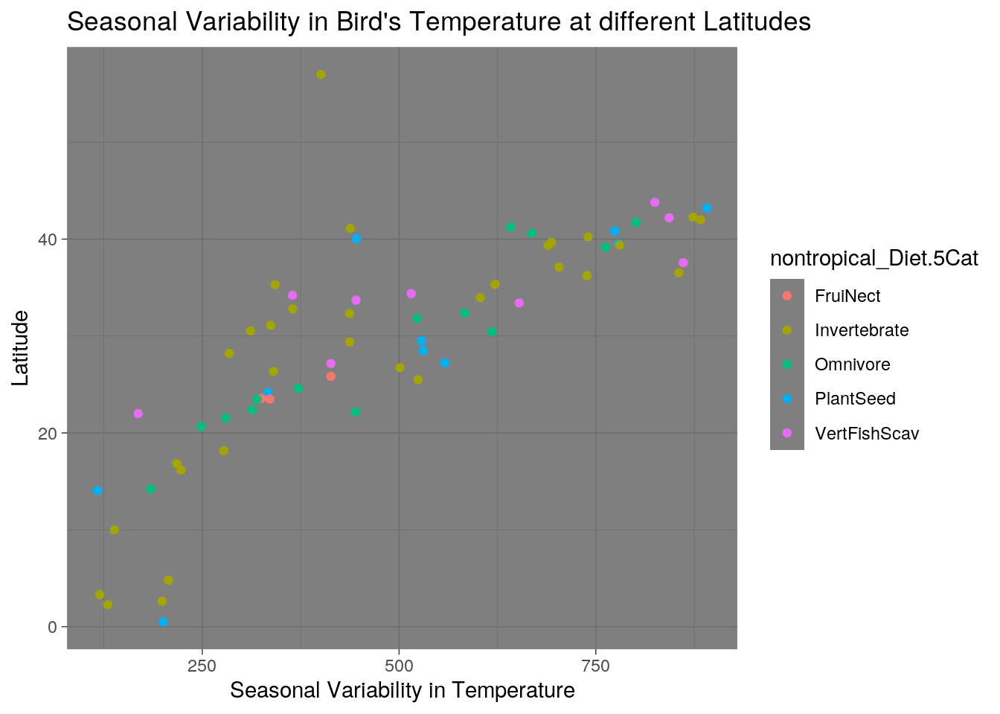 In this plot, I plot seasonal variability in temperature against latitude. As one can see, these two varibles seem highly correlated, with more variable temperatures at higher latitudes. This makes sense because at higher latitudes, there are larger, more stark differences in temperature between summer and winter. At lower latitudes (as you get closer to the tropics) temperature stays relatively constant throughout the year.
I also colored the points by diet types. There does not seem to be a correlation in diet types and latitude or seasonal variability in temperature.
clust <- birddata %>% select_if(is.numeric) %>% na.omit() #creating a dataset that just has the numeric variables
library(cluster)
sil_width <- vector()
for (i in 2:10) {
kms <- kmeans(clust, centers = i)
sil <- silhouette(kms$cluster, dist(clust))
sil_width[i] <- mean(sil[, 3])
}
ggplot() + geom_line(aes(x = 1:10, y = sil_width)) + scale_x_continuous(name = "k",
breaks = 1:10)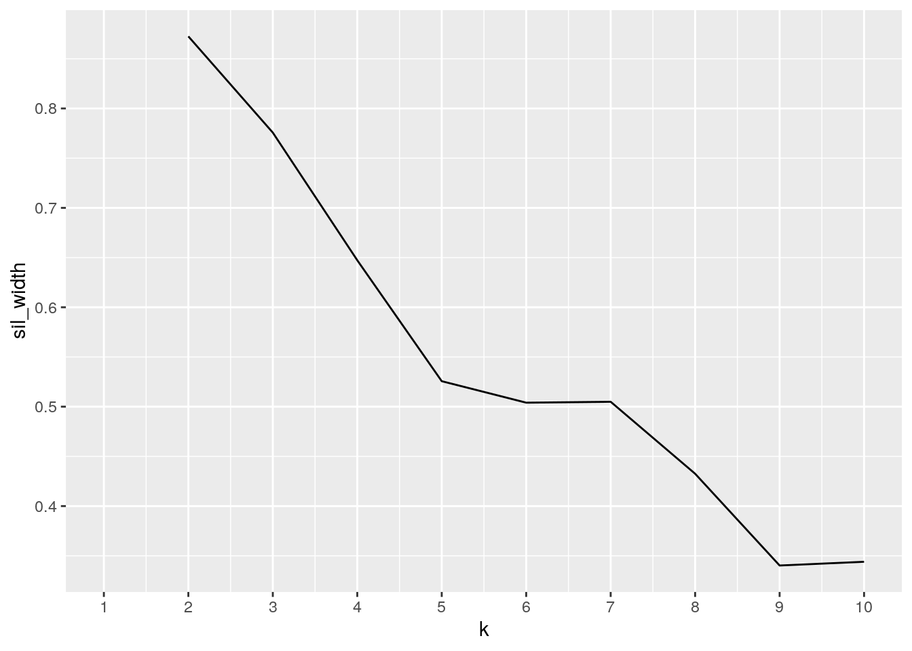
# the optimal number of clusters, by the graph, is 2. It has
# the highest silhouette width
pam <- clust %>% pam(k = 2)
pam #this is my pam clustering## Medoids:
## ID adult_body_mass_g female_body_mass_g male_body_mass_g nontropical_n
## 1 1 6129.5 4970.0 6665.0 41
## 12 9 78.7 75.8 80.9 179
## nontropical_lat nontropical_cv_logmass nontropical_litter_or_clutch_size_n
## 1 42.20000 0.03105560 2.00
## 12 30.44478 0.03592973 3.62
## nontropical_maximum_longevity_y nontropical_seasonal_var_temp
## 1 54.0 843.2392
## 12 10.8 618.2004
## mass_difference
## 1 1695.0
## 12 5.1
## Clustering vector:
## 1 2 3 5 6 7 8 10 12 14 16 17 20 21 23 27 28 32 35 36 37 38 40 43 45
## 1 1 1 2 2 2 2 2 2 2 2 2 2 2 2 2 2 2 2 2 2 2 2 2 2
## Objective function:
## build swap
## 807.3475 807.3475
##
## Available components:
## [1] "medoids" "id.med" "clustering" "objective" "isolation"
## [6] "clusinfo" "silinfo" "diss" "call" "data"pamclust <- clust %>% mutate(cluster = as.factor(pam$clustering)) #saves the cluster solution to dataset
pamclust %>% group_by(cluster) %>% summarize_if(is.numeric, mean,
na.rm = T)## # A tibble: 2 x 11
## cluster adult_body_mass… female_body_mas… male_body_mass_g nontropical_n
## <fct> <dbl> <dbl> <dbl> <dbl>
## 1 1 5993. 5353. 6258. 21.3
## 2 2 178. 155. 149. 317.
## # … with 6 more variables: nontropical_lat <dbl>, nontropical_cv_logmass <dbl>,
## # nontropical_litter_or_clutch_size_n <dbl>,
## # nontropical_maximum_longevity_y <dbl>, nontropical_seasonal_var_temp <dbl>,
## # mass_difference <dbl>pamclust %>% ggplot(aes(nontropical_litter_or_clutch_size_n,
adult_body_mass_g, color = cluster)) + geom_point(size = 4) +
ggtitle("Pam Clustering of Bird Litter Size and Adult Body Mass")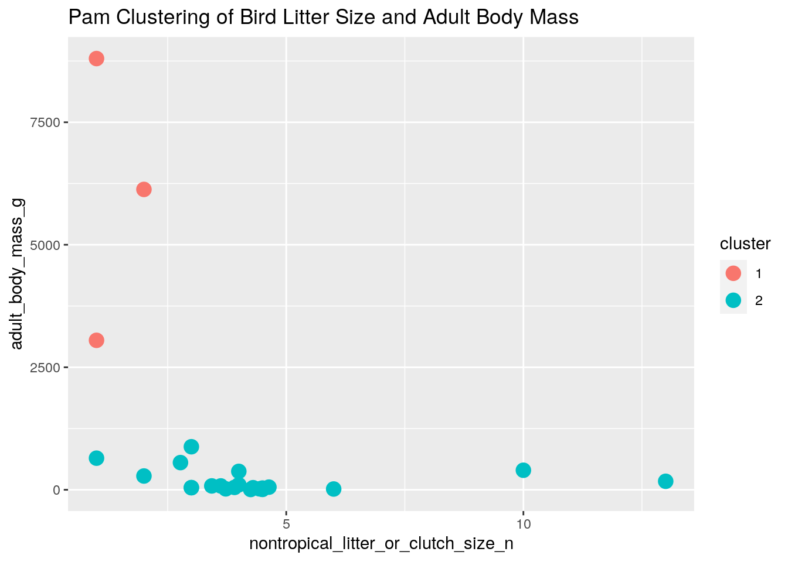
pamclust %>% ggplot(aes(nontropical_litter_or_clutch_size_n,
nontropical_maximum_longevity_y, color = cluster)) + geom_point(size = 4) +
ggtitle("Pam Clustering of Bird Litter Size and Maximum Longevity")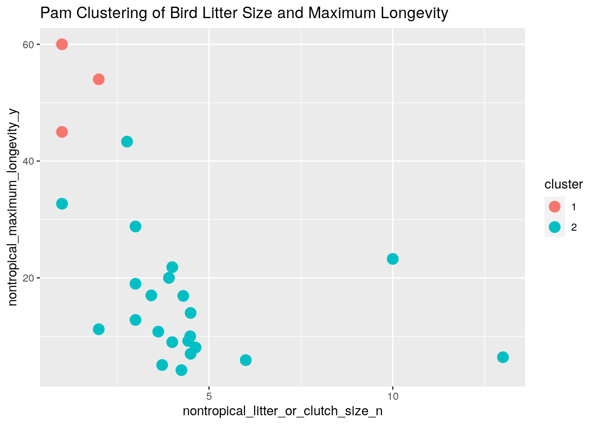
I performed PAM clustering on my data. By plotting silhouette widths at different potential k values, it is clear that using just 2 groups would maximize variability. As seen in many of my graphs, body mass provides a clear opportunity for differentiation, with the few very large birds in the dataset grouped together separate from the many small birds. You can also see in my clustering of max longevity by litter size that there are only a few birds that have a small litter size (about one or two offspring) and live for a long time. These can be grouped together against the many birds that have a relatively short longevity and large litter size.
birds <- birddata %>% select_if(is.numeric) %>% scale %>% na.omit
birds_pca <- princomp(birds)
summary(birds_pca, loadings = T)## Importance of components:
## Comp.1 Comp.2 Comp.3 Comp.4 Comp.5
## Standard deviation 2.8822044 1.4854262 1.224678 1.08774713 0.78814186
## Proportion of Variance 0.5633388 0.1496312 0.101710 0.08023724 0.04212393
## Cumulative Proportion 0.5633388 0.7129700 0.814680 0.89491720 0.93704113
## Comp.6 Comp.7 Comp.8 Comp.9 Comp.10
## Standard deviation 0.68653438 0.58432488 0.336003015 0.0523507141 0
## Proportion of Variance 0.03196279 0.02315415 0.007656079 0.0001858512 0
## Cumulative Proportion 0.96900392 0.99215807 0.999814149 1.0000000000 1
##
## Loadings:
## Comp.1 Comp.2 Comp.3 Comp.4 Comp.5 Comp.6
## adult_body_mass_g 0.532 0.160 0.126 0.259
## female_body_mass_g 0.460 0.123 0.150 0.330
## male_body_mass_g 0.440 0.140 0.154
## nontropical_n -0.116 0.636 -0.532 0.524 0.131
## nontropical_lat 0.304 0.158 -0.170 -0.339
## nontropical_cv_logmass -0.159 -0.525 0.669 -0.194
## nontropical_litter_or_clutch_size_n -0.188 0.280 0.699 0.158 0.569 -0.191
## nontropical_maximum_longevity_y 0.298 -0.194 -0.324 0.129 -0.439
## nontropical_seasonal_var_temp 0.377 0.349 -0.583 0.287
## mass_difference 0.384 0.153 0.241 -0.328 -0.696
## Comp.7 Comp.8 Comp.9 Comp.10
## adult_body_mass_g 0.774
## female_body_mass_g -0.486 0.627
## male_body_mass_g -0.403 -0.768
## nontropical_n
## nontropical_lat 0.639 0.575
## nontropical_cv_logmass 0.428 -0.137
## nontropical_litter_or_clutch_size_n
## nontropical_maximum_longevity_y 0.504 -0.553
## nontropical_seasonal_var_temp -0.556
## mass_difference -0.356 0.166 0.128eigval <- birds_pca$sdev^2 #variance explained by each PC
varprop = round(eigval/sum(eigval), 2) #cumulative variance explained
ggplot() + geom_bar(aes(y = varprop, x = 1:10), stat = "identity") +
xlab("") + geom_path(aes(y = varprop, x = 1:10)) + geom_text(aes(x = 1:10,
y = varprop, label = round(varprop, 2)), vjust = 1, col = "white",
size = 4) + scale_y_continuous(breaks = seq(0, 0.6, 0.2),
labels = scales::percent) + scale_x_continuous(breaks = 1:10)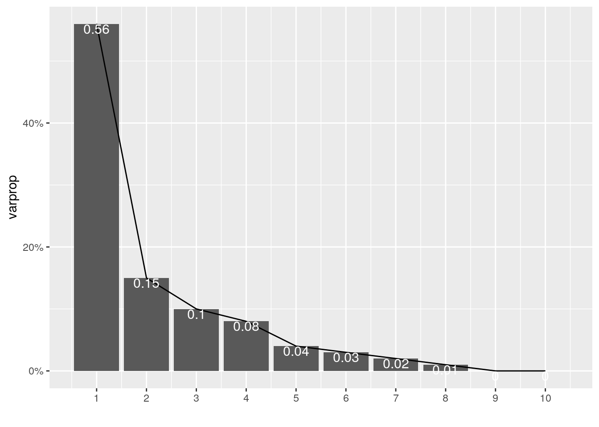 In this step, I am beginning to perform a PCA analysis on my data. I am able to see all of my principal components and how they affect the data. For instance, those that are high on PC1 have a large body mass, but relatively small litter/clutch size. I am also able to create a plot of my principal components and can see that the first three account for about 81% of the variability in my data.
birddf <- data.frame(PC1 = birds_pca$scores[, 1], PC2 = birds_pca$scores[,
2])
ggplot(birddf, aes(PC1, PC2)) + geom_point()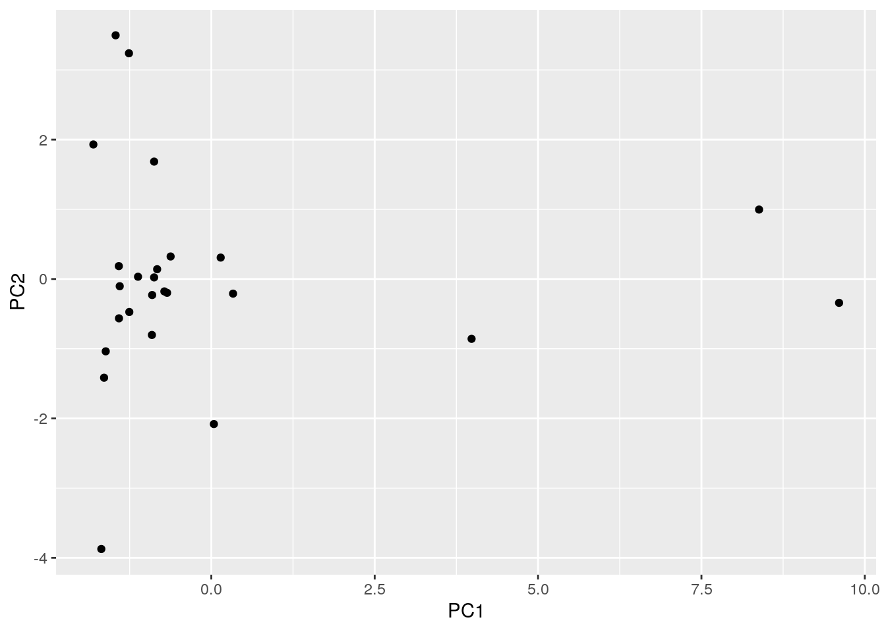
ggplot(birddf, aes(PC1, PC2)) + geom_point() + stat_ellipse(data = birddf[birddf$PC1 >
0, ], aes(PC1, PC2), color = "blue") + stat_ellipse(data = birddf[birddf$PC1 <
0, ], aes(PC1, PC2), color = "blue") + stat_ellipse(data = birddf[birddf$PC2 >
1, ], aes(PC1, PC2), color = "red") + stat_ellipse(data = birddf[birddf$PC2 <
-1, ], aes(PC1, PC2), color = "red")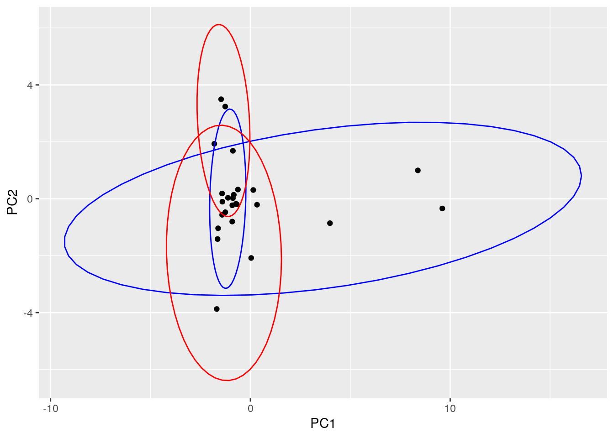 In this step, I am creating a plot to better understand the variability in my data. As you can see, there is not much variability with most bird species scoring in the middle of PC1 and PC2. Because of this, my ellipses grouping the data are overlapping.
library(factoextra)
fviz_pca_biplot(birds_pca) + coord_fixed()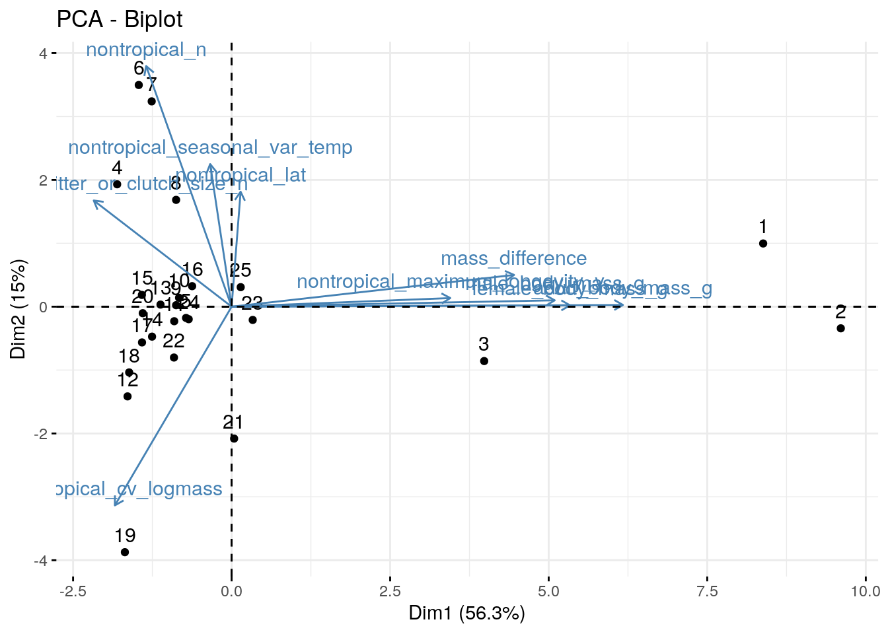 By mapping out PCA clustering (for PC1 and PC2), we can see that body mass causes a lot of variation, with the three largest birds scoring much higher on PC1 then all of the other birds. Most of these large birds, however, score similarly on PC2 (in the middle). For the small birds (ie, the ones that score low on PC1), there is a lot of variation on PC2, which includes differences in latitude, temperature variety, and litter/clutch size. Although many of the small birds score in the center of PC2, there are many notable outliers that are either very high or very low on PC2.